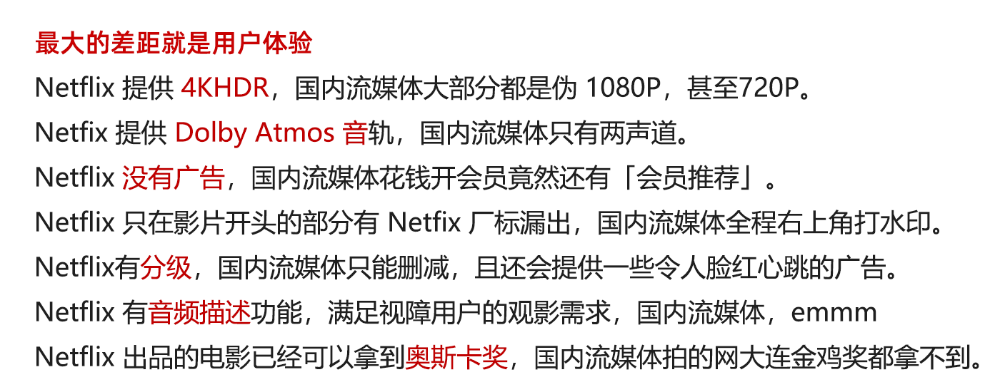
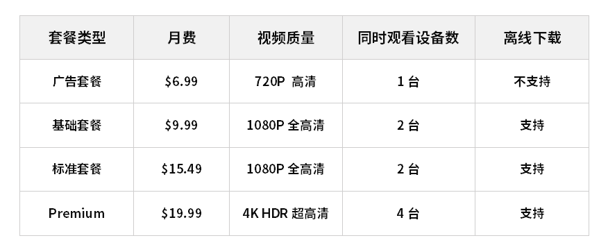
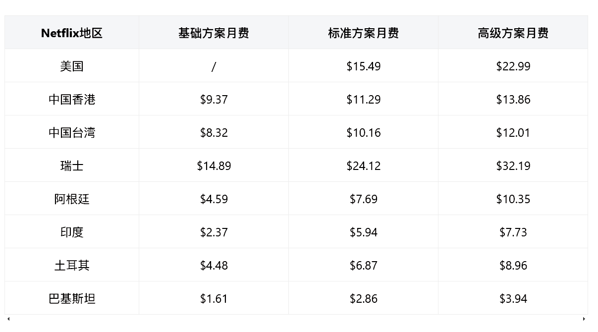
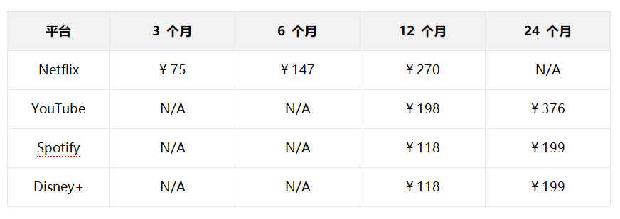
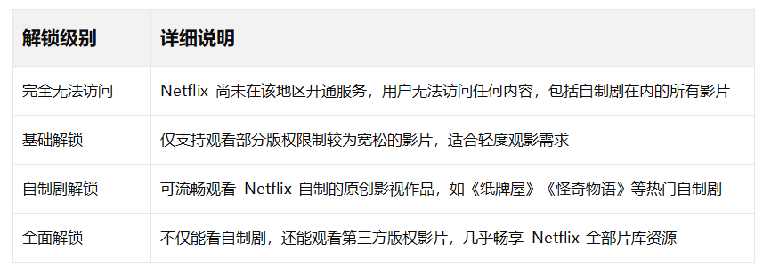
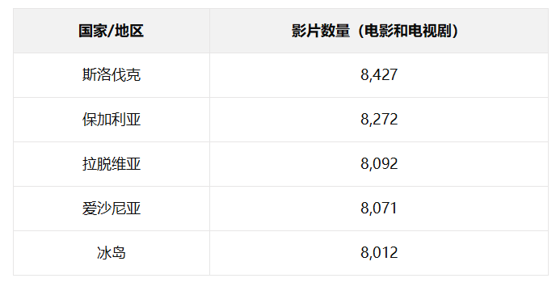
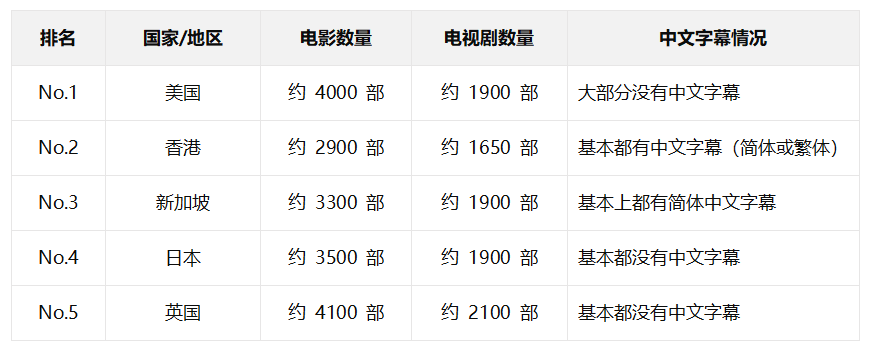
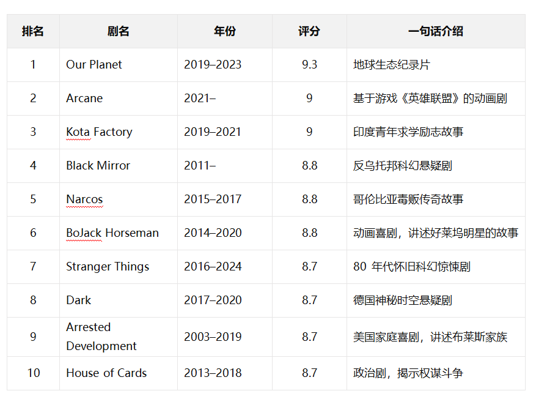
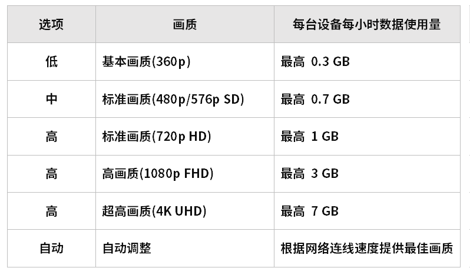

2025最新奈飞Netflix会员各区价格&方案解析，看这篇就够了
🕓2025年1月20日
视频教程：▶️https://youtu.be/v5dp6m6GZ_w

Netflix 是什么？
Netflix （网飞）从租赁 DVD 起家，现主要业务是提供视频流播服务和影片发行制作，截至2022年6月的数据，Netflix的流服务已经在全球拥有2.20亿个订阅用户，在美国的订户已达到7330万,Netflix 可在 190 多个国家和地区进行流媒体播放，不提供服务的国家和地区包括中国大陆、克里米亚、朝鲜、俄罗斯和叙利亚等。
有什么优势？

一、奈飞官方套餐价格
Netflix 的发源地美国目前推出了四款精心打造的会员方案，从实惠的广告套餐到尊贵的 Premium 体验，满足不同用户的观影需求。

各区Netflix价格介绍
Netflix 在全球190多个国家地区运营，因各地区的汇率及收入差异，每个区域的收费标准，支付方式甚至可观看的内容都有区别。
账号首次注册时的 IP 会决定您的账号每月需要支付的订阅费，但 Netflix 提供的内容是根据用户当前的 IP 地址来决定的，与账号注册地无关。如果你注册时是美区IP，走到世界各地，虽然Netfix 提供的内容资源会不同，但是你依旧需要按照美国 Netfix 方案的价格进行支付。如果你能通过代理工具更改IP 地址，可看的内容就会发生变化。
如果要切换其他区域的价格标准(比如切换到价格更便宜的区域)，需要停止当前订阅，在本账单期终止后，清除浏览器 cookie，通过适用于 Netflix的科学工县切换新地区的|P地址登陆并重新订阅，即可更换账号所在区低价区域可以关注Netflix在巴基斯坦，阿根廷及巴西等地区的收费情况，有消息称土耳其区去年开始反制在东南亚和香港网络条件下观看，请酌情选择
另外请注意，由于NetFIX的交易服务器设在海外，因此信用卡刷卡会有1.5%的国外交易手续费，建议使用有高于1.5%Netflix海外交易返点的信用卡支付方案的订阅费。
二、如何选择Netflix套餐方案
1、首先我们并不推荐基础版方案，该方案的画面清晰度无论在何种设备上都不能使您拥有良好的观看体验，且仅仅1台的可用设备限制将会大幅降低便捷性。
2、其次，如果您能够确定，在大部分时间账号都只有自己一人使用，且观看设备以移动电话与平板电脑为主，那您可以选择Netflix标准版。1080P 可在移动设备上有良好的观看体验，且满足单人设备切换的需要。
3、最后，当您能凑足3人合购 Netfix，那高级方案就是您的最佳选择。3个人平分 Netfix 高级方案订阅费，每人每月的订阅费，会比自己单独订阅 Netfix 基础方案或两人合购标准方案更划算，而且不会出现在观看影片时被人挤下线的情况，同时还能在您的任意设备上观看 4K 清晰度的精彩内容。
还想更便宜吗?有办法!因为任何 Netfix 方案都可以建立最多5个帐号，所以你可以在各Netfix合租平台上找到其他4个想看 Netfix的陌生人一起来均分高级方案的月租费，这样只需花费五分之一的奈飞高级会员订阅费用，就可以观看任意内容。
合租账号：聪明人的精明之选＃
选择合租 Netflix 账号时，以下四个关键因素值得重点关注：
- 账号品质（建议选择礼品卡付费账号，谨慎对待虚拟卡试用号）
- 购买体验（秒级发货最佳）
- 售后保障（一键重置密码等便捷功能）
- 平台信誉（长期稳定运营）
经过深入对比，奈飞小铺在账号质量、发货速度、售后服务等各个维度都表现出色。如果你正在寻找可靠的 Netflix 合租方案，奈飞小铺绝对是明智之选。点击直达>> 【粉丝专属优惠89折：KJXL】
目前各大流媒体平台的超值套餐价格：
更多靠谱奈飞合租平台：https://kji.gitbook.io/hz
三、如何看 Netflix
3.1、国内如何看 Netflix
想要在国内享受 Netflix 带来的精彩视听盛宴,只需解决三个关键环节:
- 获取 Netflix 账号 - 您的专属观影通行证
- 选择优质 Netflix 机场 - 您的稳定观影保障
- 设置简体中文界面 - 让观影体验更贴心
只要做好这三步准备,您就能轻松在国内畅享 Netflix 带来的海量影视资源。无论是追剧、看电影还是纪录片,都能获得流畅稳定的观影体验。
3.2、为什么 Netflix 会封禁普通代理？
当您使用普通代理访问 Netflix 时,可能会遇到这样的提示:“You seem to be using an unblocker or proxy”(您似乎正在使用代理)。这意味着您当前使用的代理 IP 已被 Netflix 识别并封禁。
Netflix 之所以采取这样的措施,主要是出于版权保护的考虑。作为一家全球性的流媒体平台,Netflix 在不同地区拥有不同的版权协议。为了确保内容只在授权区域播放,Netflix 不得不对跨区访问进行限制。
这就解释了为什么使用普通云服务器(如 Google Cloud、AWS、Azure 等)搭建的代理虽然能访问 Google、YouTube,却无法正常观看 Netflix。这些数据中心的 IP 段往往已被 Netflix 列入黑名单。
3.3、如何解锁 Netflix
所谓"解锁 Netflix",就是使用专门优化的代理服务来访问 Netflix。这类服务通常被称为"Netflix 机场",它们提供经过特殊处理的线路,能够绕过 Netflix 的区域限制。
一个优质的 Netflix 机场应该具备以下特点:
- 提供多条优质解锁线路 - 覆盖新加坡、香港、台湾、美国等主流地区
- 充足的流量配额 - 考虑到 1080P 视频每小时约消耗 1.5GB 流量
- 解锁能力分级 - 至少支持观看 Netflix 自制剧,优质线路还可观看第三方版权剧集 Netflix 机场解锁能力分级指南

目前市面上优质的流媒体机场通常提供 5-20 条精选线路，不仅完美支持 Netflix，还能解锁 HBO、Hulu、动画疯等热门流媒体平台。这些机场的流量资费通常在 ¥20/月 = 100GB 左右，性价比极高，特别适合追剧党和影视发烧友。
以下为您精选了几家口碑出众、服务稳定的 Netflix 专业机场：
| 机场 | 价格 | 是否解锁奈飞等 |
| Wget Cloud | 69元/月 | 全解锁 |
| Nice Cloud | 23.99元/月 | 全解锁 |
| 土拨鼠 | 30元/月 | 全解锁 |
| 极速云 | 16元/月 | 全解锁 |
| 红杏云 | 30元/月 | 全解锁 |
| 小地球仪VPN | 28元/月 | 全解锁 |
3.4、如何免费看 Netflix
探索免费观看 Netflix 的多种方式:
1、
巧用官方首月免费试用
2、体验 Netflix 官方免费剧集
3、关注限时免费活动
除了前面介绍的首月免费试用方案,Netflix 还提供了一些精彩的免费观看选项。
最值得关注的是 Netflix 官方推出的免费试看计划。为了让更多观众体验到顶级流媒体的魅力,Netflix 精选了一批王牌自制剧供大家免费观看。虽然部分剧集仅开放首集,但足以让你感受 Netflix 的制作水准。
以下是部分免费试看的精品剧集:
《怪奇物语》- 横扫全球的科幻悬疑神作
《我们的星球》- 震撼人心的顶级自然纪录片
《蒙上你的眼》- Sandra Bullock 主演的末日惊悚佳作
《名校风暴》- 备受好评的青春校园剧
《教宗的承继》- 获奥斯卡提名的传记电影
《爱情盲选》- 创新的约会真人秀
《格蕾丝与佛兰基》- 温情治愈的轻喜剧
这些精选作品完美展现了 Netflix 在不同类型内容上的制作实力。通过免费试看,你可以亲身体验到 Netflix 独特的观影魅力。
值得一提的是,Netflix 会不定期推出限时免费活动,建议关注官方渠道以获取最新资讯。
3.5、如何白嫖奈飞账号
如果你真的打算白嫖奈飞账号，那么你可能需要具备以下几个条件：
- 外网环境
- 支持奈飞扣款的信用卡、PayPal、礼品卡（Netflix Gift Card）
- 注册 IP 所在国家的手机号（用来接收奈飞的 OTP，即手机验证码）
如果你用国内 IP 直接打开奈飞网站，它会提示你：“Sorry, Netflix is not available in your country yet”。这说明奈飞网站并没有被大陆屏蔽，只不过"不在中国运营"罢了。
所以，首先你需要有一个外网环境，比如美国 IP、香港 IP、台湾 IP、土耳其 IP 等。
接下来，你还要准备一张能扣款验证（或付月费）的双币种信用卡、VISA、Master、Amex 等信用卡，或者一张外币的虚拟信用卡（VCC）。
如果你想白嫖奈飞的首月免费试用账号，根据你当前选择的 IP 地址所在地，你的虚拟卡内至少需要有当地一货币单位的余额，用于奈飞的首次扣款验证。比如，你用美国 IP 注册，则需要卡内有 1 刀余额；如果是欧元区，则卡内最低有 1 欧余额。目前 1 欧元约等于 1.13 美元，所以用美元卡在欧元区注册，则卡内最低需要 1.2 刀余额（我在这个问题上吃过亏）。
万事俱备以后，直接打开奈飞官网，简单填写你的邮箱地址、账号密码，以及信用卡信息就可以注册成功了。
注意：如果你使用的是虚拟信用卡（VCC），那么很大可能性，你会卡在提交信用卡信息页面。因为奈飞政策缘故，目前针对首月免费试用账户，已经封杀了很多之前被滥用的虚拟卡，比如MOVO 卡（422803）、BOA 虚拟卡（431305）、花旗虚拟卡（540302）、Yandex 虚拟卡（559900）、Barter 虚拟卡（405640）等。想要使用这些虚拟卡成功开通奈飞的免费试用账号，你需要准备住宅型家用代理 IP 或手机原生代理 IP，或者准备好当地手机号接收验证码（我在这个问题上和奈飞苦苦战斗了小半年，耗费心血无数，教训多到数不清）。
如果虚拟卡这条路子走不通，你可以考虑直接用奈飞礼品卡来注册。目前可以考虑美区、港区的奈飞礼品卡，或者土耳其的奈飞礼品卡。
需要注意的是，目前奈飞已经取消土耳其的首月免费试用政策（被薅的太疼了）。不过由于其巨大的价差空间，即便在取消首月免费试用的前提下，哪怕使用土耳其礼品卡开通正规付费订阅账户，依然很划算。
如果条件所限，或者不想这么麻烦，你还可以考虑直接购买合租或独享的奈飞账号。
四、奈飞影视剧介绍
Netflix 上有很多优质的影视作品，还有一些制作精灵、屡获大奖的奈飞原创剧集。
截止 2025 年 01 月，Netflix 在全球拥有 13,612 部影片的版权，但这些版权仅限于特定的国家或地区。这意味着 Netflix 在各个国家或地区的影片库都要小于 13,612 部——有些地区的影片数量甚至非常有限。这是因为版权问题以及不同国家的观众口味和需求可能会有所不同，所以每个地区的 Netflix 内容库都会有所差异。
以下表格展示了不同国家 Netflix 上电影和电视剧的数量 （TOP 5）：

以下表格则展示了其他热门国家 Netflix 上的电影和电视剧数量：

通过以上表格，我们可以了解到不同热门国家 Netflix 上的电影和电视剧数量，以及中文字幕的情况。
4.1、奈飞热门影视剧
1、3体 (3 Body Problem): 《3 体》是一部中美合拍的Netflix原创科幻惊悚电视剧集，剧集改编自中国科幻小说家刘慈欣的同名著作《三体》。
2、鱿鱼游戏（Squid Game）：一部讲述参与者参加一场决定生死的游戏，最后获得巨额奖金的韩国剧集。
3、纸牌屋（House of Cards）：一部讲述美国政治权谋斗争的经典美剧，主演凯文·史派西和罗宾·怀特。
4、黑镜（Black Mirror）：科幻惊悚题材的英剧，展现了科技发展可能带来的未来社会问题。
5、怪奇物语（Stranger Things）：一部充满悬疑、惊悚和科幻元素的美剧，讲述了一群小孩在寻找失踪朋友的过程中遭遇了超自然现象。
6、纳尔科斯（Narcos）：一部描绘哥伦比亚毒枭帕布罗·埃斯科巴尔崛起与陨落的美剧。
4.2、什么是 Netflix 原创剧
Netflix 制作了各种类型的原创内容，这些内容在其流媒体服务上都被标记为“Netflix 原创”。这包括充满怀旧气息的科幻电视剧《怪奇物语》和由亨利·卡维尔主演的奇幻系列《巫师》。许多 Netflix 原创电影在著名的颁奖典礼上获得了荣誉，例如阿方索·卡隆的《罗马》，这部电影在 2019 年赢得了三项奥斯卡奖；还有诺亚·鲍姆巴赫的《婚姻故事》，该片为劳拉·邓恩赢得了奥斯卡最佳女配角奖。
由于许可电影从 Netflix 中减少，Netflix 原创现在占据了 Netflix 内容库中更大的比例。截止到 2023 年 5 月，Netflix 原创作品（包括电影和电视剧）占据了整个内容库的 47%，预计到 2023 年 8 月这一比例将达到 50%。在电影方面，这个数字略低，截止到 2023 年 5 月初，Netflix 原创电影占据整个电影库的 30% 以上。
目前，Netflix 原创电影数量接近 917 部，预计到 2023 年底将达到 1000 部。点击查看维基百科上完整的奈飞原创剧清单。
4.3、奈飞原创剧 IMDB TOP 10
以下表格展示了 IMDB 上评分最高的 10 部 Netflix 原创剧：

这些 Netflix 原创剧种类丰富，包括纪录片、动画、惊悚、家庭喜剧等，展现了 Netflix 对多元化内容的承诺。
五、如何下载Netflix —— 奈飞 4K 观影指南
想要体验 Netflix 顶级画质带来的视觉冲击?除了需要订阅支持 4K 的高级会员计划外,不同设备还有其特定要求。让我们一起来看看如何在各种设备上实现最佳观影体验
5.1、iOS 设备 - iPhone & iPad 的高清体验
只需使用境外 App Store 账号(美区、港区等)下载 Netflix APP,登录后即可畅享:
- iPhone X/XS/XS Max 系列: 支持高达 1080P 的全高清画质
- iPhone XR 等机型: 稳定支持 720P 清晰画质
- iPad 设备: 配备 Retina 显示屏(≥326ppi)可享受 1080P,其他机型支持 720P
5.2、Mac 设备 - 极致 4K HDR 体验
重大突破:
自 2021 年起,Mac 用户终于迎来了激动人心的 4K HDR 支持!具体要求:
- 设备: 2018 年或更新款搭载 Apple T2 安全芯片的 Mac
- 显示器: 需支持 60Hz 4K 输出及 HDCP 2.2 协议
最佳使用建议:
Safari 浏览器是你的不二之选 - 原生支持 1080P 和 HDR。虽然 Chrome 和 Firefox 也能观看,但默认限制在 720P。想要更高画质?Safari 才是正解。
5.3、Android 设备 - 简单但强大
快速上手:
- 系统要求: Android 5.0+
- 获取方式:
Google Play 商店直接下载
无 Google Play? 使用 APKPURE 下载最新 Netflix APK
5.4、Windows 11 PC - 畅享 4K 极致清晰
双剑合璧:
Windows 用户有两大绝佳选择:
1、Netflix UWP 应用(推荐)
- 支持 4K 超高清
- 需将应用商店切换至美区
2、Microsoft Edge 浏览器
- 原生支持 4K
- 性能优化,观影流畅
硬件要求:
- 显示器: 4K 60Hz + HDCP 2.2
- 处理器: 第七代及以上 Intel CPU
- 显卡: 最低 GTX 1050,需更新至最新驱动
5.5、安卓电视盒子、Apple TV（最高支持 4K）
软硬件要求：
必须经过奈飞认证过的电视盒子，才可以正常安装和使用奈飞。具体支持情况如下：
- Apple TV 4K ：同时支持 4K、HDR 10、Dolby Vision
- Xbox One S 、 Xbox One X：全支持
- Chromecast Ultra：支持 4K 、 Dolby Vision
- Mi Box S 国际版：支持 4K 、 HDR
- Nvidia Shield 、 Nvidia Shield Pro：支持 4K 、 HDR
- Amazon Fire TV 4K Stick：支持 4k 、 Dolby Vision
此外，连接电视盒子的电视，也需要支持 60Hz 4K、HDR、Dolby Vision 等才可以真正享用以上这些功能特性。同时，连接电子盒子与电视的线材也需要支持 HDMI2 和 HDCP 2.2，如果有外接音响，也是同理。
备注：由于不含 Netflix ESN 码，小米盒子国内版即使刷国际版固件，仍然无法正常安装和使用奈飞。
5.6、智能电视上（最高支持 4K）
软硬件要求：
有一些智能电视（部分型号）内置 Netflix 客户端，如海信、LG、松下、飞利浦、三星、夏普、索尼、东芝等。具体品牌及型号，可参考奈飞官网的介绍页面。
其中，奈飞官网还提供了几个官方推荐的智能电视品牌及型号，包括：松下 HX900Z、 HX750W，三星 Q950TS、 Q900TS 等，索尼 X8000H 、X8007H 等。
六、FAQ 常见问题与解决方案
6.1、如何查看 Netflix 分辨率
Windows 平台快捷键：
CTRL + SHIFT + ALT + D
Mac 平台快捷键：
CTRL + SHITF + OPTION + D
6.2、看Netflix需要多少流量
Netflix 提供 4 种不同数据使用量的选项，它们的数据使用量如下表所示：

6.3、我为什么不能看 4K 分辨率的 Netflix 视频?
想要看 4K 超高清分辨率的奈飞视频，需要几个条件同时满足：
1、
你的账号支持 4K（需要最高等级的账号）
2、
你的播放设备支持 4K（Mac 笔记本最高支持 1080P，Win 笔记本需要 Edge 播放器）
3、
网速要足够快，建议最低 25Mbps，推荐使用 FAST.COM 测速（奈飞自家的测速网站）
6.4、提示使用代理工具怎么办？
这个是最常见的问题，很明显，你使用的节点没有解锁Netflix ，解决办法为更换节点，如果是机场，找解锁Netflix的节点，一般机场老 板都会标注，解锁Netflix或是流媒体之类。如果是自建vps那就只能通过 dns解锁，但又需要花一笔钱，如果你的线路不是特别牛，建议买个机场 吧！
6.5、为什么有的提示使用代理工具有的又不提示？
2020年2月，Netflix取消了自制剧的代理检测，什么是自制剧， 就是开头有Netflix标志的影片，此类视频不再检测代理，所以不受影响； 而其他Netflix购买版权的影片还是要检测代理的。
6.6、为什么我的VPS不能看Netflix
Netflix 封禁了绝大部分来自IDC 的IP 地址。若购买VPN服务，需要
联系客服确认有可看 Netflix 的 streaming IP 类似服务。
在 GCP、GGC、 Vultr、DigitalOcean、BanwagonHost 等主流服务商处
购买的服务，安装代理后，大部分都无法看 Netflix。
部分小众卖家处的 IP 地址可能没被列入 Netflix 的黑名单，但是购买成
本、维护成本都不低，还是推荐购买月付的机场稳妥。
6.7、首页或是登录页面打不开怎么办？
大概率是节点问题，现在很多可以看Netflix的节点都采用了dns 解锁的方式，所有过多的人通过同一个dns看Netflix，就报错了，解决方 法，换个节点或是过段时间再看。
6.8、我的代理可以上 Google、YouTube，但为什么不能看 Netflix？
奈飞对代理有要求，普通代理都被封杀了，需要有原生 IP，没被奈飞检测到的代理节点才可以正常看奈飞。
6.9、我怎么知道我的IP能不能看Netflix
打开后面这个网址：https://www.netflix.com/title/80018499
如果能看到视频，大概率你的IP能正常观看Netflix 。
七、如何在 Netflix 上观看简体中文字幕
Netflix 的界面语言设置会根据您的 IP 地址自动调整。不同区域的默认中文设置如下:
新加坡、印度、马来西亚等地区: 默认简体中文
美国、英国、香港、台湾等地区: 默认繁体中文
打开https://www.netflix.com/LanguagePreferences/ 里面选择中文 ，并且在用户设置里面也要改成中文，这样就是简体中文。
八、总结
Netflix 作为全球顶级的流媒体平台,以其海量优质内容和极致观影体验吸引了无数观众。本文为您详细解析了如何突破地域限制,畅享 Netflix 带来的视听盛宴 - 从选择合适的解锁方案、注册账号、挑选套餐,到设备支持等关键环节,我们都进行了深入浅出的讲解。
我们精心挑选的 Netflix 原创剧集推荐,涵盖了悬疑、科幻、爱情等多个类型,让您在浩如烟海的内容库中快速找到心仪的作品。无论您是追剧达人还是电影发烧友,都能在 Netflix 找到属于自己的精神家园。
值得一提的是,选择一个稳定可靠的解锁服务至关重要。优质的解锁方案不仅能确保流畅的 4K HDR 观影体验,还能让您在观看《怪奇物语》、《纸牌屋》等现象级美剧时不会错过任何精彩瞬间。当然,在使用解锁服务时也请留意当地相关政策。
随着全球内容产业的蓬勃发展,Netflix 正以前所未有的速度推出令人惊艳的作品。通过本文的指引,相信您已经做好准备,随时可以开启一段奇妙的 Netflix 观影之旅。
祝大家观影愉快！